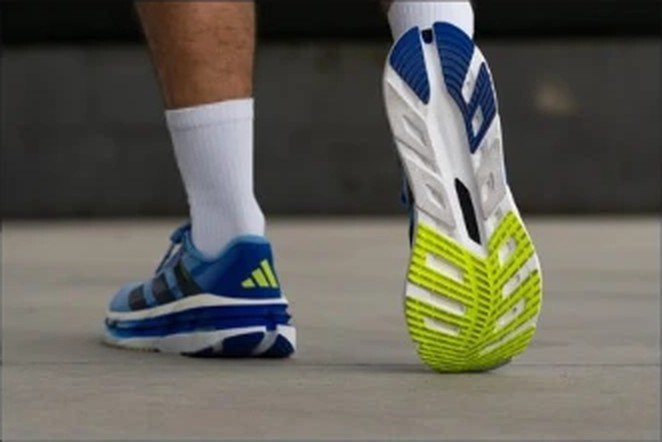
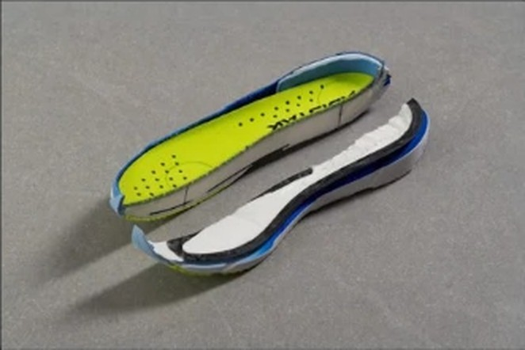

DAILY｜クッション型デイリー
重いデイリーで、反発は67.2%。
実測278gのデイリーだが、前足部のエネルギーリターンは67.2%ある。スピード部門2位のREBEL v5（67.3%）とほぼ同じ数字である。摩擦係数0.68、ヒール剛性5と、足元も安定している。デイリー部門67足中15位。
ジョグでも反発がほしい人。安定した靴を探している人。濡れた路面も走る人。
夏に蒸れやすい人。軽い靴が好きな人。


前足部のエネルギーリターン67.2%は、デイリーのGHOST 18（58.1%）やKAYANO 32（49.3%）より大きく高い。
摩擦係数0.68は、計測のある106足の中で14番目に高い。ヒール剛性は5段階で5。安定性の点数は4.5である。
摩耗深度は0.7mmで、推定寿命は約700km。1kmあたり約31円。
5点満点。計測値を当サイトのルールで点数にしたもの。
安定性4.5、グリップ4.5、耐久性4.5が点を支えている。スピード3.0もデイリーとしては高い。軽さ2.5が唯一低い項目である。
高いほど反発する。
高いほど滑りにくい。
| adi starBYD | GHOST 18 | NOVABLAST 5 | |
|---|---|---|---|
| 価格 | ¥22,000 | ¥19,800 | ¥15,400 |
| 実測重量 | 278g | 290g | 254g |
| 衝撃吸収（SA） | 131 | 135 | 141 |
| エネルギーリターン前足部 | 67.2% | 58.1% | 66.5% |
| 摩擦係数 | 0.68 | 0.54 | 0.53 |
| 摩耗深度 | 0.7mm | 0.8mm | 0.9mm |
| 性能点 | 3.92 | 4.11 | 4.08 |
| コスパ点 | 4 | 4.5 | 5 |
NOVABLAST 5は24g軽く、反発もほぼ同じで、価格は¥6,600安い。GHOST 18は性能点4.11で上。adi starBYDは2足よりグリップが高く、安定性で選ぶ靴である。
弱点は通気性と重さである。通気性は5段階で2。実測278gも軽くはない。夏場の長いジョグでは、蒸れが気になるかもしれない。
通気性が低いので、夏に買うなら薄手の靴下と合わせて試着したい。
ジョグ用の1足で、たまにペースを上げる日にも使いたい人に向く。反発があるので、ジョグの最後に少し速く走る練習にも対応できる。
安定して、弾む。重さと通気性を気にしなければ、ジョグを少し楽しくしてくれる1足である。
※本記事は海外ラボ（RunRepeat）の計測データとメーカー公表値、当サイトの計算をもとにした分析です。計測はUS9（約27cm）です。1kmあたりの費用は摩耗深度から推定した寿命での概算です。価格は当サイトの掲載値で、変更されている場合があります。